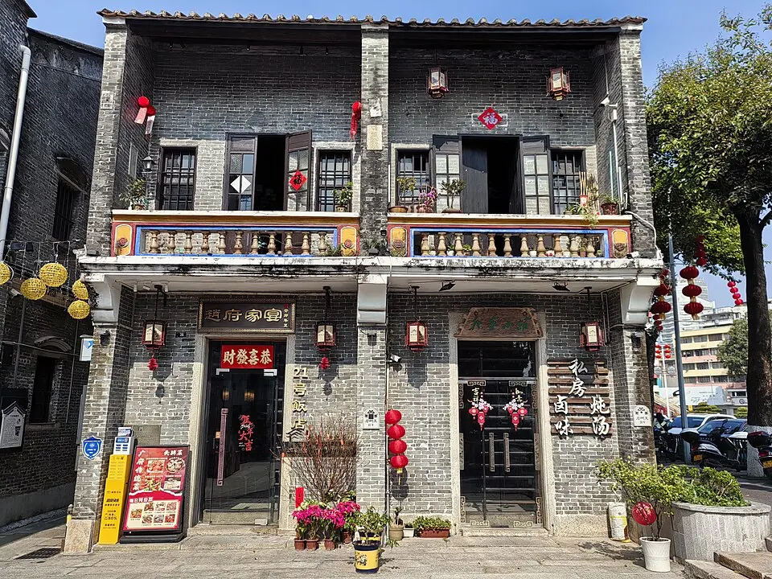
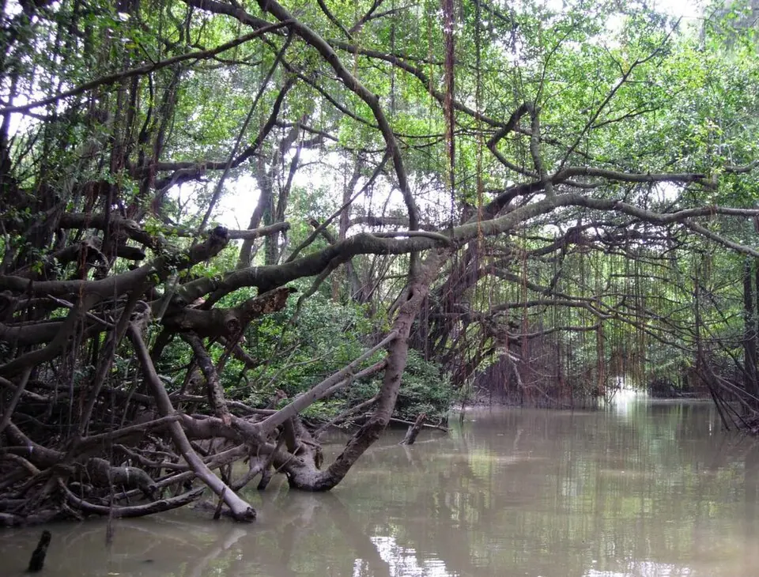
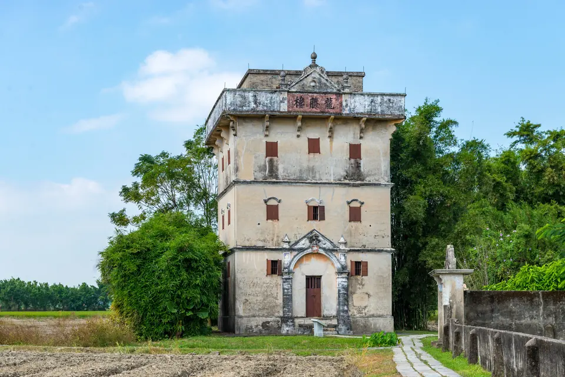
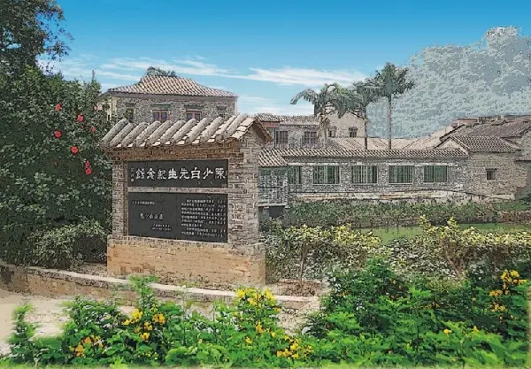
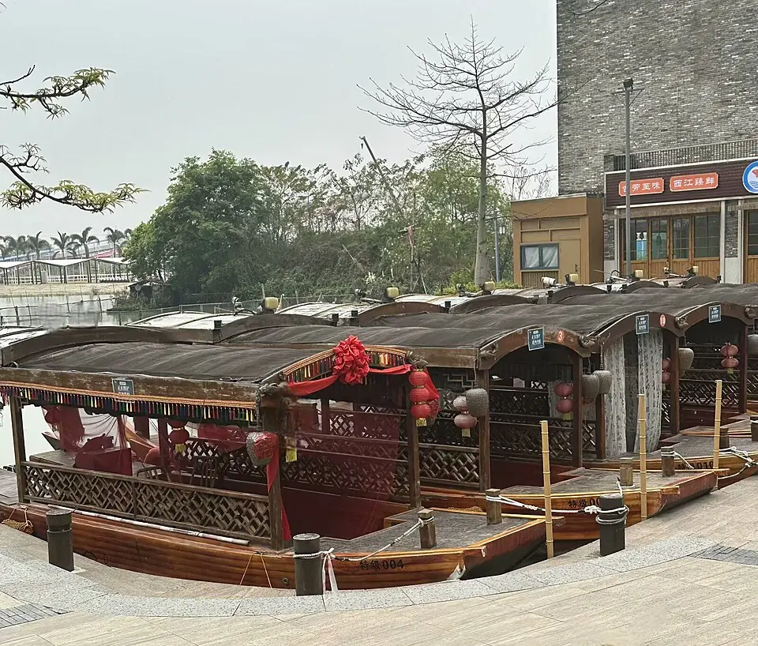
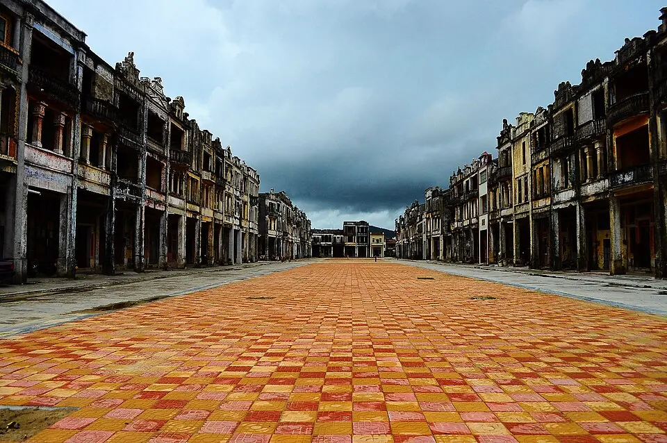

推荐路线
只有一天 · 老城慢逛
长堤与三十三墟街看骑楼，启明里看侨屋和巷道；同一老城片区便于把步行、用餐和休息连起来。
- 留多少时间
- 一天 · 蓬江老城
- 怎样接驳
- 以老城步行为主，按导航选择街巷；若另去外海吃面，需加一段跨区接驳。
A FIRST VISIT / 第一次来江门
老城慢逛、侨乡古村、水乡游船与碉楼田野。选一条顺路的行程，把用餐、交通和休息一起留进旅程。
资料更新：2026.10.16 · 适合 1—2 天初访
景点、美食与路线，按你想去的片区慢慢选。
A DAY AT YOUR PACE / 按自己的节奏
先想好有多少时间，再选此刻最想做的事。从六条编辑路线里，找一个出发点。
还没定行程？先参考下面的“一天 · 看建筑”建议，也可以直接浏览下方六条完整路线。
一天 · 看建筑
第一次来可选老城；想看圩市与银信故事，可选台山端芬。两条选一条，不拼成同一天。
推荐路线
长堤与三十三墟街看骑楼，启明里看侨屋和巷道；同一老城片区便于把步行、用餐和休息连起来。
另一种选择
梅家大院看骑楼立面与圩市格局，海口埠读出洋和家书故事；适合愿意提前安排端芬片区接驳的人。
以上为本站编辑建议；出发前请核对开放安排与往返接驳。
半天 · 看建筑
先在外海读建筑与人物，不把跨区景点排得太满。
推荐路线
陈少白故居的白桥、庭园与人物展陈，适合一次有重点的短途参观；午餐顺路尝外海面。
半天 · 亲近自然
现有半日路线以人文和寻味为主，没有完全匹配的自然线。若想去白水带，请把它作为主要一站，取舍故居行程并先查接驳；水乡完整一日线留到时间更充足时。
推荐路线
这条线提供白水带散步的可选方向，但半天不宜把故居、午餐与白水带全部排满。它是调整行程的参考，不是完整的自然半日游。
半天 · 寻味
半天留在一个片区，把参观和午餐接在一起。
推荐路线
故居参观后在外海安排午餐，外海面就是这一段的寻味重点；礼乐排骨需要另查餐馆位置与接驳，不强行加站。
一天 · 看建筑
第一次来可选老城；想看圩市与银信故事，可选台山端芬。两条选一条，不拼成同一天。
推荐路线
长堤与三十三墟街看骑楼，启明里看侨屋和巷道；同一老城片区便于把步行、用餐和休息连起来。
另一种选择
梅家大院看骑楼立面与圩市格局，海口埠读出洋和家书故事；适合愿意提前安排端芬片区接驳的人。
一天 · 亲近自然
古劳水乡作为主景点，登高按余力决定。
推荐路线
水道、石桥与水乡午餐适合慢游。下午可以继续留在古劳；体力、天气与交通都合适时再考虑大雁山。
一天 · 寻味
选水乡鱼皮角，或选老城小吃与一顿慢午餐；先选片区，再找顺路的店。两条选一条。
推荐路线
把古劳鱼皮角放进水乡午餐，上午看水道与石桥、下午继续慢走，用餐与游览围绕同一片区展开。
另一种选择
老城街巷适合边逛边找小吃和茶歇，晚餐按落脚处就近选；想去外海寻味，再单独核对接驳。
两天 · 看建筑
两天分给老城与开平，给跨区交通留出余地。
推荐路线
第一天走长堤与启明里，第二天看自力村碉楼与赤坎骑楼；建筑类型与环境有变化，也不用把几个碉楼片区全塞进一天。
两天 · 亲近自然
这条两日线兼顾城市与自然，第二天把更多时间留给小鸟天堂。
推荐路线
老城与新会分两天安排，小鸟天堂提供古榕与湿地的自然体验；陈皮村可安排用餐，故居按兴趣和开放情况取舍。
两天 · 寻味
现有两日线都兼顾游览，可参考新会线认识陈皮文化，或选开平线顺路尝赤坎豆腐角。两条选一条。
推荐路线
第一天在老城安排街巷小吃，第二天去陈皮村认识陈皮文化并用餐；古井烧鹅需另外核对路程，不直接塞进午餐。
另一种选择
老城与开平各留一天，赤坎游览时顺路尝豆腐角；这条仍以建筑游览为主，适合愿意兼顾看景与寻味的人。
六条路线，从半日慢逛到两日小旅行，按片区与兴趣组合。以下为本站编辑建议，交通与开放安排请在出发前确认。

照片暂未加载，可继续阅读介绍。
照片暂未加载，可继续阅读介绍。
照片暂未加载，可继续阅读介绍。
照片暂未加载，可继续阅读介绍。先把半天留给外海故居与一碗面，有余力再去白水带散步。
陈少白故居看白桥、庭园与人物展陈，按当天开放安排参观。
查看这一站 →附近找一碗外海面；想吃礼乐排骨时另查礼乐餐馆接驳，不当作故居门口的同一条街。
查看这一站 →转到白水带、横坑彩虹村轻松散步。只有半天时可省略这一站，把时间留给故居。
查看这一站 →外海、礼乐与白水带是不同片区；逐段查地图公交或网约车路线，不把两处景点写成步行相连。 故居内部开放与预约临行核对；白水带旧报道中的夜市、演出和游乐设施，不作为每日固定项目。
摄影/供图：摄影作者未注明；江门市文化广电旅游体育局公开发布 · 原照片 ↗ · 官方公开配图，未见开放许可 ↗。仅等比缩小与WebP转换，保留完整画面及原水印。原页为2026-09-02发布，未注明拍摄日期；照片仅作景观参考，不代表设施实时开放状况。

照片暂未加载，可继续阅读介绍。水道、石桥与鱼皮角组成轻松的一天，登高留给体力与时间都充足的时候。
先选古劳的具体游览片区，看石桥与水道；想乘船则按当日开放线路安排。
查看这一站 →找古劳鱼皮角配一顿午餐，先问当天做法与份量。
查看这一站 →体力充足且接驳顺畅，可选大雁山一小段登高；带小朋友或想慢游就继续留在水乡，不必两处全走完。
查看这一站 →古劳水乡与大雁山需车辆接驳；公共交通先查末班与回程，进山前确定具体入口。 水乡不是一个统一码头，先核对具体景区、游客中心和船线；大雁山可因天气、防火管控调整，不承诺观光车运营。
摄影/供图：Ballmacy · 原照片 ↗ · CC BY-SA 4.0 ↗。等比缩小、WebP压缩；网页展示可能裁切。衍生照片沿用所列许可。照片记录拍摄时的面貌。

照片暂未加载，可继续阅读介绍。把梅家大院与海口埠连成一段侨乡故事，读懂出洋与回乡之间的牵挂。
梅家大院沿骑楼观察立面，再看中央空地与圩市格局；不默认每栋房屋都能入内。
查看这一站 →沿途查询当日可吃的咸汤圆或台山家常菜；若专程去水步吃黄鳝饭，要另留交通时间。
查看这一站 →到同属端芬的海口埠读出洋与家书故事，展馆和讲解以当天安排为准。
查看这一站 →梅家大院与海口埠之间仍需核对接驳，自驾或已安排车辆会更从容；不标固定车程。 海口埠是历史文化游览点，不能在这里搭船去上下川岛。海岛应另开一天并查山咀港船班，不塞进这条文化线。
摄影/供图：kenth31 · 原照片 ↗ · CC BY 2.0 ↗。等比缩小、WebP压缩；网页展示可能裁切。衍生照片沿用所列许可。照片记录拍摄时的面貌。
上川岛与下川岛是两个目的地，需要从台山山咀港乘船并安排岛上接驳。初次两日游建议选一个岛单独规划，提前确认天气、去程和返程船班。
查看川岛行前提示 →先确认陈白沙纪念馆或梁启超故居纪念馆当天开放，再选一个馆配一顿慢午餐。故居院落并非全程有顶；大雨时不强行赶山路、游船和海岛，改期比赶场更合适。
陈白沙纪念馆 → 梁启超故居纪念馆 →古劳水乡、小鸟天堂或圭峰山玉湖可按兴趣择一，把午餐和休息排在中间。游船先问儿童乘坐规则；带推车先核对台阶、坡道和卫生间位置，不默认古村与山路全程无障碍。
古劳水乡 → 小鸟天堂 →订票时把完整到站名与目的地放进导航比较，别只凭“江门”二字选车站。跨到台山、开平、鹤山、恩平时，把景点间接驳与末班返程一起查；地图预计用时不能当成固定承诺。
自力村碉楼群 → 梅家大院 · 汀江圩 →用区市筛选美食，再核对店铺地址、近期营业与当天菜式。一个片区选一顿正餐加一份小吃即可；线上测评只作口味参考，历史价格和排队情况不照搬。
荷塘鱼饼 → 礼乐排骨 →开放、票务、演出与船班会调整，请以景区当日公告为准。地图链接用于检索地点，具体入口与交通方式请在地图中确认。路线与停留安排是本站编辑建议。
旅行清单保存在当前浏览器，不会跨设备自动同步。旅途中看到的风景，也可以写进自己的江门明信片 →